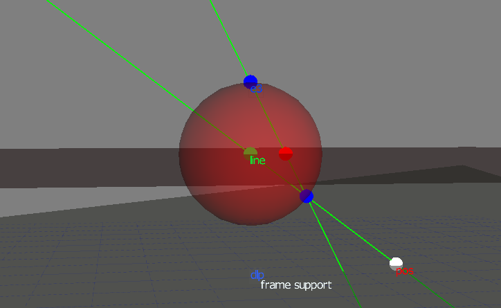

小さい機体でもSLAMこそが未来だと思うもののさすがに私では手がでないので貧者的局所測位系と名付けて天井に貼り付けたOpenVM cam+魚眼レンズとフレームからの情報を合わせてフレームにのせたマーカーの水平位置を推計するというのを作っています.


魚眼レンズで得られるイメージセンサー上のマーカーの位置からcamからの方向を計算してマーカーの高さの情報をヒントにマーカーのcamを基準にした水平位置をだしてます. このセンサ上のマーカーの位置から3Dの方向を計算するところはいわゆるステレオグラフィックプロジェクション(立体射影)になっていて、三角関数や線形代数を使って計算できます.
前置きが長くなりましたがフレームの水平位置を求めるところまでをgeometric algebraを使ったらどうなるか試してみました.
auto pointO = Construct::point(0,0,0);
auto pointP = Construct::point(0,0,-h);
auto v = - Vec(x,y,-1) * Vec(0,0,1) / Vec(x,y,-1);
auto line = pointO ^ v ^ Inf(1);
auto dlp = (pointP <= Drv(0,0,1));
auto pos = (dlp <= line);
の６行です. 使ったgeometric algebraのc++ライブラリは Versor (libvsr) というものです.
絵を書くとこうなってます. この絵はGAviewerで書きました.

(x,y)がスケールされたイメージセンサー上の位置で最初の一行目でそれを立体射影し得られる単位球面上の点へのベクトルvをもとめています. みかけはちょっとアレですがこれも絵を書いて説明できます .
最後の３行で原点とその点を結ぶlineを作ってそれとワイヤーフレームで表示されている高さの-hの水平面dlpとの交点(meet)を計算しposとしています. <= はlibvsrでコントラクション(内積の拡張)に割り当てられた演算子です.
フレームの姿勢情報から作った点posを通るようなフレームの水平面を表しているのが少し傾いているframe supportとなっている平面です. camで見えるにフレーム上の点は原点を通る直線とこの平面の交点として上に書いたgeometric algebraの計算と同じようmeetとして簡単に位置が求められます. このように記号になれてさえしまえば単に図を表すように書くだけなので案外簡単にいろいろなことができる印象です.
プログラムを動かして得られたデータをプロットしたものが

です. データが飛んでいるのはうまくフレームと認識できなかったところでマーカーの位置やプログラム
等まだまだ手を加える必要があります.
この水平位置の推計を元にvisual odmetryのデータを作ってMAVLinkでAPMに投げてやろうと思っています.
[Update Feb. 5 2018]
マーカーのLEDを高輝度なもの2つにしてその距離から高さの推定も行ってみました.

推定でKalman filterを使っています. 一応結果をMAVLinkでAPMに投げるようにしてみたところ, mavproxyのstatus commandの結果中に
9201: VISION_POSITION_DELTA {time_usec : 1517818213897626, time_delta_usec : 21691, angle_delta : [0.0, 0.0, 0.0], position_delta : [0.012343823909759521, 0.010005341842770576, 0.00880509614944458], confidence : 90.0}
のように反映されるようになりました. 条件によりますが40-50fpsくらいのレートでOpenMV camからのデータを処理してVISION_POSITION_DELTAメッセージが送られているようです.
[Update Feb. 11 2018]
実際にPOSHOLDモードで飛ばしてみた結果はこんな感じ https://www.youtube.com/watch?v=eJjv9GJqoHU です.
どうもFC(ArduPilot)でVISION_POSITION_DELTAメッセージを使って推定した位置が少しづつずれているようです. 位置そのものを送るようするといいのかもしれませんがArduPilotでは位置そのものを送るVISION_POSITION_ESTIMATEは現在作業中らしく今はまだサポートされていません.